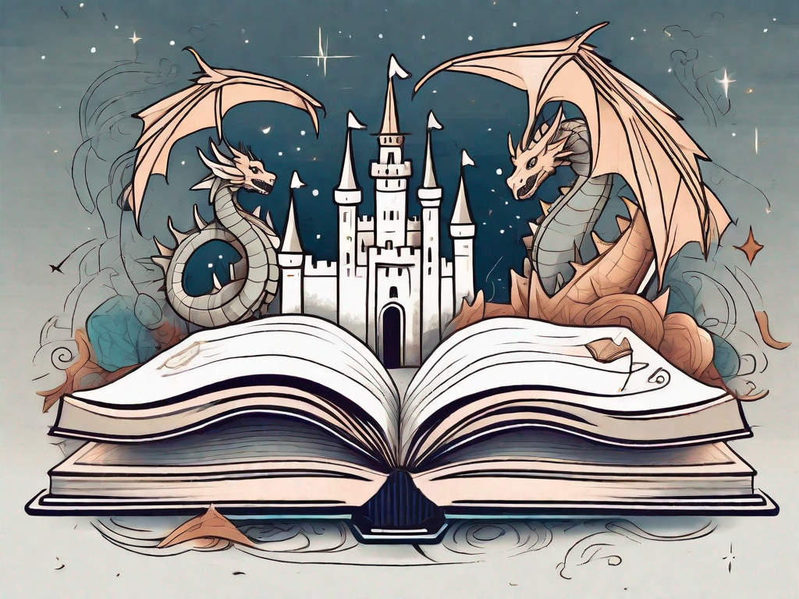
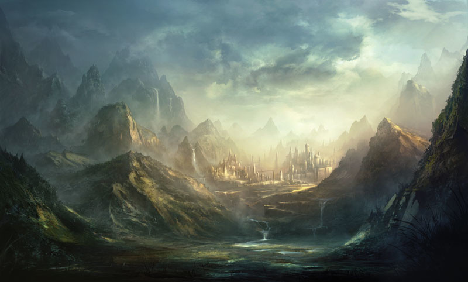
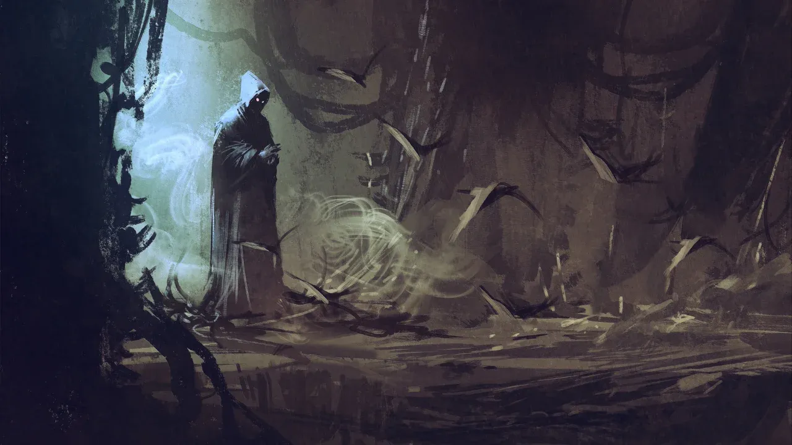
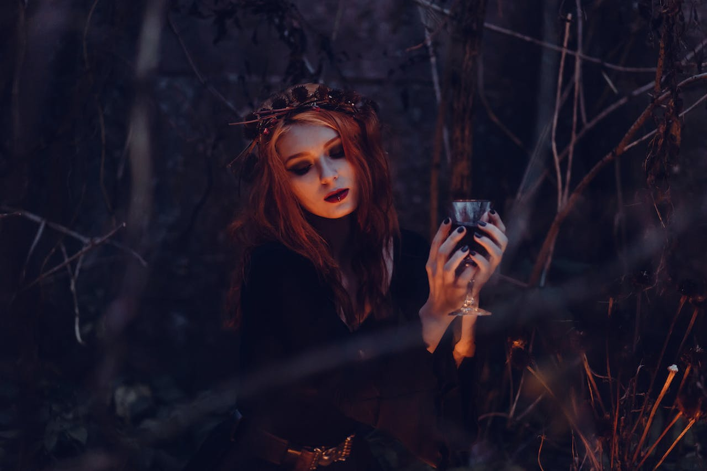
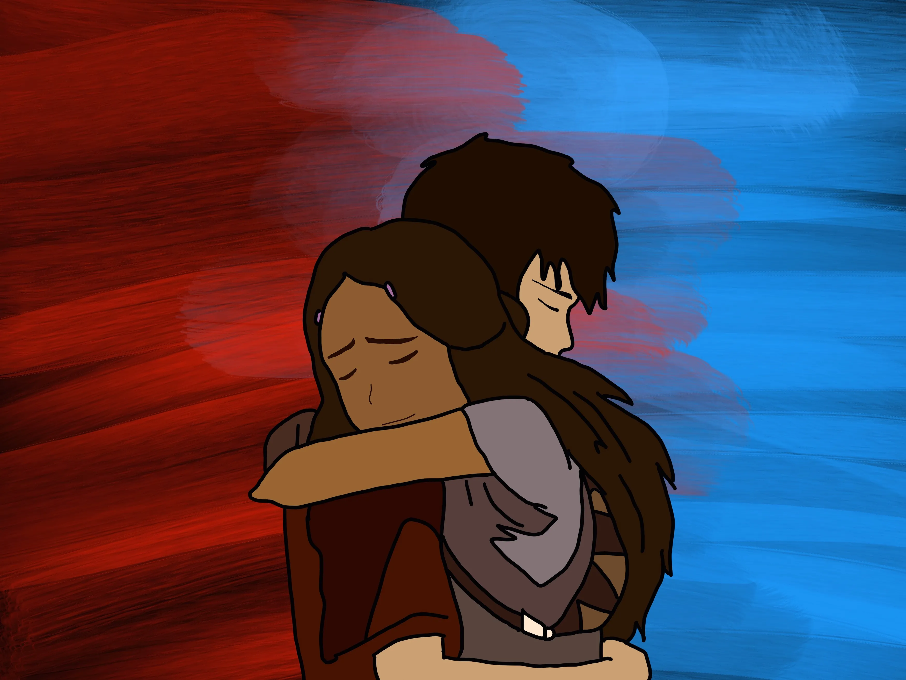

Fantasy



Fantasy is one of my favorite genres. All of the books on this website have major elements of fantasy. Here, there are elements in the world that make it quite different from our own. This can be in the form of fated bonds, dystopia, emphasized royalty, mystical creatures or beings, and more.
Paranormal

Paranormal novels are a specific type of fantasy novel, where the supernatural elements are usually ingrained within the real-world (as secrets) rather than entirely new worlds. Some common elements might be vampires, shifters, witches, etc.
Romance
I also love romance books! But, I don't like when the main plot is just romance or when it is insta-love or fast-burn. I prefer slow-burn novels, where the romance develops gradually as the characters get to know each other. Preferably, it happens over the course of several books if it is a series, with the characters having no official relationship in the first book (at least!).
Enemies-to-Lovers

This is one of my favorite types of romance. The main characters start out disliking each other, and slowly start to develop feelings for one another as the book progresses. In some cases, one of the characters is even actively trying to kill the other. In many, the hatred is mutual, with both leads being forced to work together to solve some common goal.
Soulmates / Mates
In this sub-genre, the main characters are destined to be together. They live in a world where people either 'click' at a certain age or when they meet their other half. However, just because people are soulmates doesn't mean that they're able to be together freely. Circumstances, class, and even secret missions can actively drive them apart.
Friends-to-Lovers
In this sub-genre, the main characters are friends first, and romance develops slowly. Oftentimes, they are childhood best friends, and neither can risk losing the other, which is why they keep their feelings hidden. Sometimes one or both of the characters is already in a relationship, and the time just isn't right for them to be together.